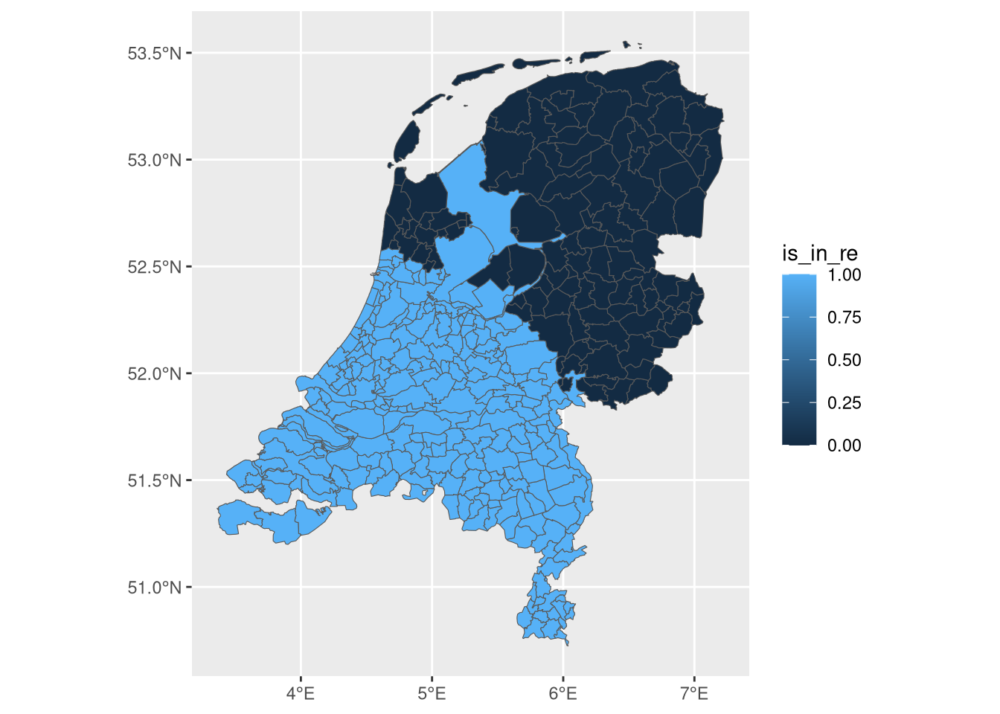
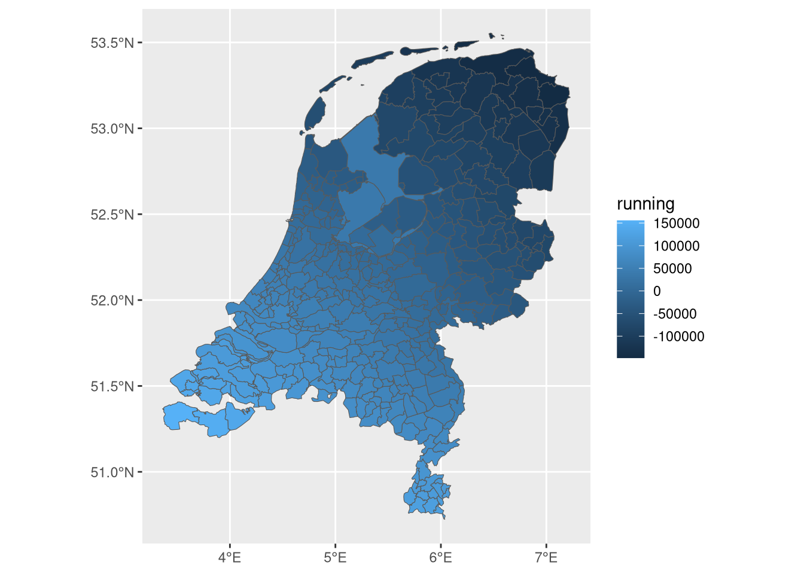
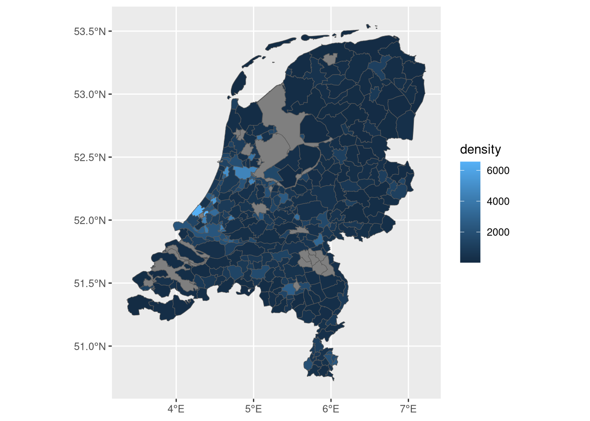
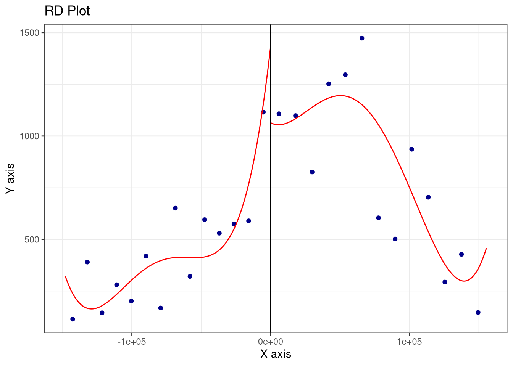

5Regression Discontinuity: Roman Empire Border and Population Density in the Netherlands
5.1 Introduction
Does historical inclusion in the Roman Empire have a lasting effect on economic development today? One way to study this is with a regression discontinuity design (RDD): municipalities just inside the old Roman border are compared to those just outside it. Because the border was drawn for historical/military reasons rather than based on local economic conditions, crossing it is essentially random — making it a valid quasi-experiment.
In this notebook we use Dutch municipality data to:
Load the spatial dataset and visualise the Roman Empire boundary.
Construct a signed running variable (distance to the border, positive inside, negative outside).
Merge in population data and compute population density.
Run and visualise the RDD.
5.2 Step 1: Load packages and data
We use sf for spatial data and tidyverse for data manipulation. The dataset netherlands_roman_updated.geojson contains Dutch municipalities with two key variables already prepared: is_in_re (1/0) and distance_to_border (in metres, signed: positive inside the empire, negative outside).
library(tidyverse)
── Attaching core tidyverse packages ──────────────────────── tidyverse 2.0.0 ──
✔ dplyr 1.2.0 ✔ readr 2.1.5
✔ forcats 1.0.0 ✔ stringr 1.6.0
✔ ggplot2 3.5.2 ✔ tibble 3.3.1
✔ lubridate 1.9.4 ✔ tidyr 1.3.2
✔ purrr 1.2.1
── Conflicts ────────────────────────────────────────── tidyverse_conflicts() ──
✖ dplyr::filter() masks stats::filter()
✖ dplyr::lag() masks stats::lag()
ℹ Use the conflicted package (<http://conflicted.r-lib.org/>) to force all conflicts to become errors
library(sf)
Linking to GEOS 3.14.1, GDAL 3.11.5, PROJ 9.6.2; sf_use_s2() is TRUE
ned <-st_read("./netherlands_roman_updated.geojson")
Reading layer `netherlands_roman_updated' from data source
`/home/bas/Documents/git/aerc/notebooks/netherlands_roman_updated.geojson'
using driver `GeoJSON'
Simple feature collection with 355 features and 5 fields
Geometry type: MULTIPOLYGON
Dimension: XY
Bounding box: xmin: 3.360782 ymin: 50.72349 xmax: 7.227095 ymax: 53.55458
Geodetic CRS: WGS 84
A first map to see which municipalities were inside the Roman Empire:
ned |>ggplot(aes(fill = is_in_re)) +geom_sf()

5.3 Step 2: Construct the running variable
The RDD requires a single continuous running variable that is centred on the cutoff (the Roman border, at zero). The distance_to_border column is already signed:
Positive for municipalities inside the Roman Empire.
Negative for municipalities outside it.
We rename it to running for clarity.
data <- ned |>mutate(running = distance_to_border)
We can map the running variable to confirm it looks right — positive values should appear in the south of the Netherlands (inside the empire) and negative in the north:
data |>ggplot(aes(fill = running)) +geom_sf()

5.4 Step 3: Load population data and merge
We load a CSV file with 2022 population counts per municipality (sourced from CBS via cbsodataR).
We then join the population data to the spatial data frame by matching municipality names.
population <-read_csv("./popned.csv")
Rows: 354 Columns: 2
── Column specification ────────────────────────────────────────────────────────
Delimiter: ","
chr (1): gemeenten_2022
dbl (1): bevolking_totaal
ℹ Use `spec()` to retrieve the full column specification for this data.
ℹ Specify the column types or set `show_col_types = FALSE` to quiet this message.
data <- data |>left_join(population, by =c("NAME_2"="gemeenten_2022"))
5.5 Step 4: Compute population density
Raw population counts are hard to compare across municipalities of different sizes. We compute population density as inhabitants per km² by dividing total population by the municipality area (stored in area, which is in m²; multiplying by 1,000,000 converts to km²).
data <- data |>mutate(density = bevolking_totaal /as.numeric(area) *1000000)
A map of population density across the Netherlands:
data |>ggplot(aes(fill = density)) +geom_sf()

5.6 Step 5: Run the regression discontinuity
We use the rdrobust package, which implements the standard RDD estimator with data-driven bandwidth selection.
rdplot() produces a visual of the discontinuity: it bins observations along the running variable and plots average density on either side of the cutoff (zero).
rdrobust() estimates the size of the jump at the cutoff and reports the result with robust confidence intervals.
library(rdrobust)rdrobust::rdplot(y = data$density, x = data$running, c =0)

rdrobust::rdrobust(y = data$density, x = data$running, c =0) |>summary()
Sharp RD estimates using local polynomial regression.
Number of Obs. 335
BW type mserd
Kernel Triangular
VCE method NN
Number of Obs. 110 225
Eff. Number of Obs. 26 65
Order est. (p) 1 1
Order bias (q) 2 2
BW est. (h) 26978.578 26978.578
BW bias (b) 53033.910 53033.910
rho (h/b) 0.509 0.509
Unique Obs. 110 225
=============================================================================
Method Coef. Std. Err. z P>|z| [ 95% C.I. ]
=============================================================================
Conventional -706.290 648.588 -1.089 0.276 [-1977.499 , 564.920]
Robust - - -1.201 0.230 [-2429.116 , 582.954]
=============================================================================
5.7 Step 6: Scatter plot of the raw data
A simple scatter plot puts each municipality as a dot, with its running variable on the x-axis and its population density on the y-axis. The cutoff at zero separates the two groups. This gives a quick informal sense of whether a jump is visible at the border.
data |>ggplot(aes(x = running, y = density)) +geom_point()
Warning: Removed 20 rows containing missing values or values outside the scale range
(`geom_point()`).